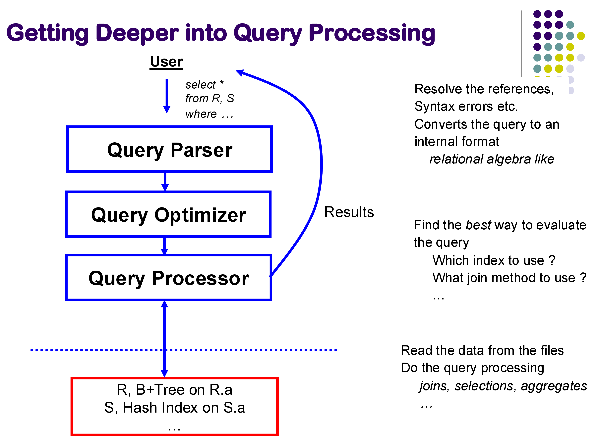
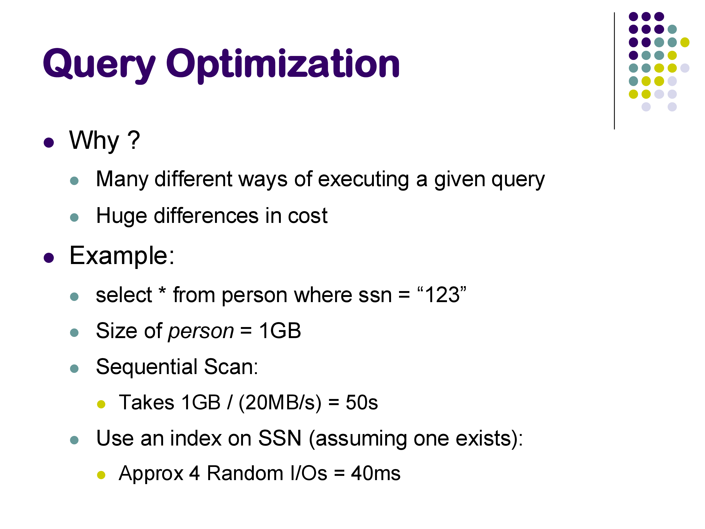
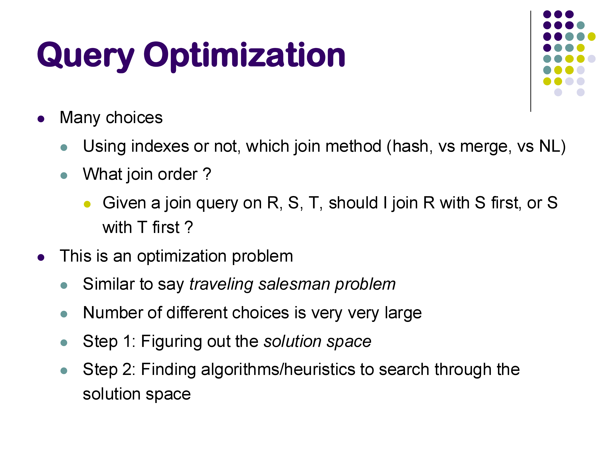
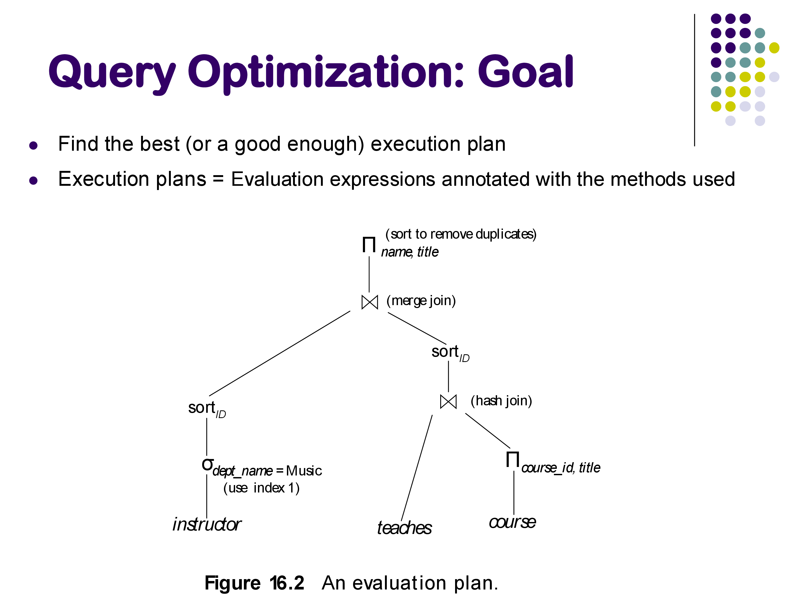
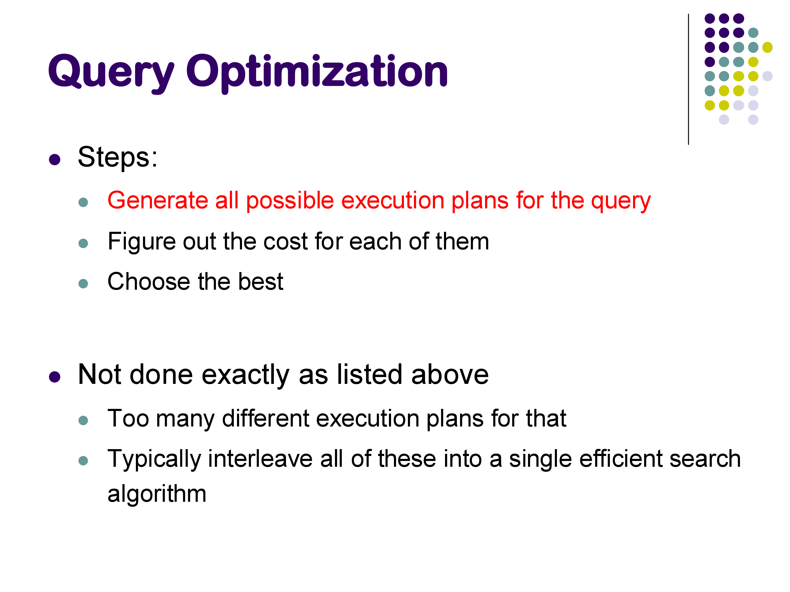
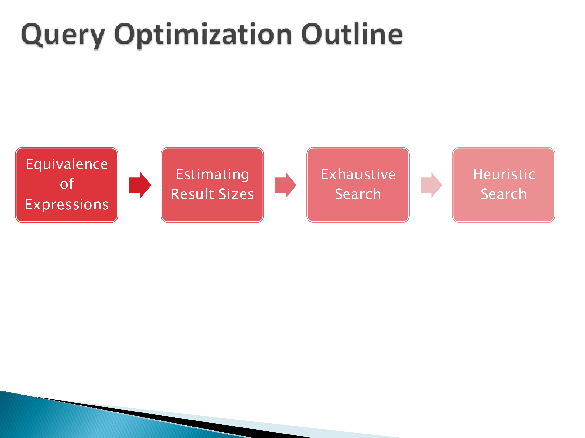

CMSC424: Query Processing — Introduction to Query Optimization
Instructor: Amol Deshpande
1. Why Query Optimization Matters
In the previous three sets of notes, we covered how relational operators are implemented: sequential scans, index lookups, nested loops joins, hash joins, sort-merge joins, aggregation, and external memory algorithms. For each operation, we saw that there are multiple ways to implement it, and the performance differences between implementations can be dramatic.
Query optimization is the problem of automatically choosing the best implementation for a given SQL query. The optimizer sits between the query parser and the query processor: it receives a logical query plan (a tree of relational operators) and produces an annotated physical plan specifying exactly which algorithm to use for each operator, which indexes to access, and in what order to perform join operations.

Why does this matter? Consider a simple selection on a large table. A sequential scan might take tens of seconds. The same query answered through a B+-tree index might take a fraction of a millisecond — a speedup of several orders of magnitude. On a 1 GB relation, a sequential scan can take around 5 seconds; the same query with an appropriate index might run in under 40 milliseconds. Neither plan is wrong; both return the correct result. But one is over 100× faster.
For joins, the differences are even more pronounced. A query joining three relations might take under 100 milliseconds with hash joins and the right join order, and nearly 20 seconds with nested loops joins in an unfavorable order — a factor of nearly 200. As queries become more complex and datasets grow larger, the optimizer’s ability to find a good plan becomes more and more critical.

Query optimization is an active research area despite being studied for over 50 years. Major database vendors — Snowflake, Amazon Redshift, Oracle, and others — still invest significant engineering effort into their optimizers. SQL is complex, workloads evolve, and hardware changes (SSDs, large memories, many-core processors, distributed systems) all create new challenges for optimizer design.
2. The Space of Choices
Given a SQL query, the optimizer must make choices at multiple levels:

Whether to use an index: for a selection like WHERE id = 579, should the system use a B+-tree index on id or scan the entire table? The answer depends on how selective the predicate is and what indexes are available.
Which join algorithm to use: for a join between two relations, should the system use hash join, sort-merge join, index nested loops join, or plain nested loops join? Different algorithms have different memory requirements, I/O costs, and preconditions (e.g., index nested loops requires an existing index; hash join only works for equi-joins).
Join order: given a query joining relations R, S, and T, should the system join R and S first, then join the result with T? Or S and T first, then R? For a query with N relations, there are N! possible orderings — a number that grows explosively. For 10 relations, that is over 3.6 million orderings. In practice, databases handle queries joining 50 or even 100 tables, and the search space is enormous.
This makes query optimization a combinatorial optimization problem, similar in flavor to the Traveling Salesman Problem. Like TSP, finding the provably optimal plan is computationally intractable in general, so real optimizers use heuristics and dynamic programming to find good (not necessarily optimal) plans efficiently.
3. The Goal: Avoiding Bad Plans
A common misconception is that the optimizer’s goal is to find the best plan. In practice, the goal is better described as avoiding catastrophically bad plans.
The optimizer works with estimates of relation sizes, predicate selectivities, and operator costs — not exact figures. These estimates are based on statistics stored alongside the data (more on this below). Because the inputs to the optimizer are approximate, the plan it selects may not be the theoretically optimal plan for the actual data. What matters is that it avoids plans that are orders of magnitude worse than the best.
In the examples we examined in class, the difference between the optimizer’s first choice (hash join, ~100ms) and the worst forced choice (nested loops join, ~19s) was nearly 200×. A good optimizer reliably finds a plan in the fast range; an optimizer that occasionally chose nested loops for this query would be a serious problem in production.
The output of the optimizer is a fully annotated physical plan: not just which operators to use, but also their parameters — which hash function, how much memory to allocate, which index to use, and so on.

4. Observing Query Plans with PostgreSQL
PostgreSQL provides excellent tools for inspecting the query plans it generates. Understanding these tools is essential for understanding why a query is running slowly and how to diagnose optimization issues.
4.1 EXPLAIN and EXPLAIN ANALYZE
The EXPLAIN command shows the query plan that the optimizer chose, along with estimated costs and row counts. EXPLAIN ANALYZE additionally executes the query and shows actual row counts and execution times alongside the estimates. The format is:
EXPLAIN ANALYZE SELECT * FROM posts WHERE id = 579;A typical output looks like:
Index Scan using posts_pkey on posts (cost=0.29..8.31 rows=1 width=...)
(actual time=0.05..0.06 rows=1 loops=1)
Index Cond: (id = 579)
Planning Time: 0.4 ms
Execution Time: 0.1 msKey fields to understand:
- cost=X..Y: estimated cost in internal units. X is the startup cost (cost before first tuple is emitted) and Y is the total cost. These are not seconds — they are dimensionless relative units used to compare plans.
- rows=N: estimated number of output rows, based on statistics.
- actual time=X..Y: real wall-clock milliseconds (only with ANALYZE).
- actual rows=N: actual number of rows produced during execution.
The plan is presented as an indented tree, with the innermost (lowest-level) operators at the bottom. Reading from bottom to top gives you the data flow.
4.2 Comparing Plans: Index Scan vs Sequential Scan
Consider a simple lookup on the primary key of a posts table:
-- Query added by instructor
SELECT * FROM posts WHERE id = 579;The optimizer uses an index scan via the primary key B+-tree index. The execution time is under 0.2 ms. Now consider a range query with many matching rows:
-- Query added by instructor
SELECT * FROM posts WHERE last_editor_user_id BETWEEN 10 AND 1000;For a narrow range (returning ~224 rows), the optimizer uses the secondary index on last_editor_user_id. For a wider range (returning ~4,771 rows), it switches to a sequential scan. Why? With a secondary index, each matching tuple requires a random disk access to fetch from the heap. When the number of matching tuples is large enough, the cumulative cost of many random accesses exceeds the cost of a single sequential scan. The optimizer estimates the row count and crosses this threshold to decide.
This illustrates a key principle: secondary indexes are only beneficial for selective predicates. For low-selectivity queries (many matching rows), sequential scan wins.
4.3 Row Estimation Accuracy
One of the most interesting aspects of EXPLAIN ANALYZE output is how close the estimated row counts are to actual row counts. For a join query like:
-- Query added by instructor
SELECT * FROM posts p JOIN comments c ON p.id = c.post_id JOIN users u ON p.owner_user_id = u.id;PostgreSQL estimated 46,385 rows and got exactly 46,385. This level of accuracy is not accidental — it reflects careful statistics maintenance. PostgreSQL stores detailed histograms and column statistics for each relation, updated by the VACUUM ANALYZE command. For base relations, it knows the exact row count; for simple equi-join predicates on well-maintained statistics, the estimates can be very accurate.
However, estimates degrade for unusual predicates. A query like:
-- Query added by instructor
SELECT * FROM posts WHERE last_editor_user_id % 10 = 5;Produced an estimate of ~129 rows when the actual count was ~1,032. The % (modulo) operator is unusual enough that PostgreSQL’s statistics model does not handle it well — it cannot apply the standard histogram approach. A reasonable heuristic would have been to guess 1/10 of the total rows (since % 10 takes 10 equally likely values), but the optimizer did not make that inference. Inaccurate row estimates are one of the most common root causes of bad query plans.
5. Using PostgreSQL Hints to Force Query Plans
PostgreSQL does not support explicit SQL hints in the way that Oracle or MySQL do (e.g., /*+ USE_INDEX(...) */). Instead, it provides run-time configuration parameters that enable or disable specific physical operators globally for the current session. These are the enable_* parameters, documented in the PostgreSQL manual on Query Planning.
5.1 Available Hint Parameters
The key parameters for controlling join and scan methods are:
| Parameter | Default | What it controls |
|---|---|---|
enable_hashjoin |
on | hash join operator |
enable_mergejoin |
on | sort-merge join operator |
enable_nestloop |
on | nested loops join operator |
enable_indexscan |
on | B+-tree index scans |
enable_seqscan |
on | sequential (full table) scans |
enable_bitmapscan |
on | bitmap index scans |
enable_indexonlyscan |
on | index-only scans (covering indexes) |
enable_sort |
on | explicit sort operations |
Set them with SET for the current session:
SET enable_hashjoin = off;
SET enable_mergejoin = off;
SET enable_nestloop = off; -- use with caution!Reset to default with:
RESET enable_hashjoin;
-- or
SET enable_hashjoin = on;Important caveat: setting enable_X = off does not prevent PostgreSQL from using that operator — it raises its estimated cost to a very high value, making it extremely unlikely to be chosen. If all alternatives are disabled, PostgreSQL may still use a “disabled” operator rather than produce no plan at all. In the demo, disabling enable_indexscan caused PostgreSQL to choose a Bitmap Index Scan instead — an operator that internally uses an index but is classified differently.
5.2 What the Demo Revealed
In the live demo, we ran a three-table join and progressively disabled operators to observe the impact. The results illustrated the optimizer’s cost model directly:
All operators enabled (optimizer’s natural choice): hash joins throughout. Execution time: ~100ms. Optimizer’s estimated cost: ~2,000–4,000 internal units.
Hash join disabled (SET enable_hashjoin = off): PostgreSQL switched to index nested loops join (reported as “Nested Loop” in EXPLAIN but with index scans on the inner relation). Execution time: ~232ms. Optimizer’s estimated cost: ~5,000 units.
Hash join and index scan both disabled: PostgreSQL switched to sort-merge join. Execution time: ~109ms. Optimizer’s estimated cost: ~12,000 units. Interestingly, the actual execution time was better than index nested loops, even though the optimizer’s estimated cost was higher — illustrating that the cost model is not perfectly calibrated.
All three disabled, only nested loops available: execution time jumped to ~19 seconds — nearly 200× slower than the hash join plan. The estimated cost was 75,000 units, accurately signaling that this was a bad plan. This is exactly the scenario the optimizer exists to prevent: it knew nested loops would be bad and avoided it when given the choice.
The cost numbers (2,000, 5,000, 12,000, 75,000) are the optimizer’s internal estimates in abstract “cost units.” They do not translate directly to seconds or milliseconds — they are hardware-independent relative measures. The actual execution times depend on the specific machine, memory, and I/O subsystem. But the cost units are proportional to expected resource consumption and serve their purpose: they correctly rank the plans, with the exception of the sort-merge vs index nested loops case where the model was slightly off.
5.3 When and Why to Use Hints
Under normal circumstances, you should not need to use these parameters. PostgreSQL’s optimizer is generally good, and manually overriding it without understanding the statistics and cost model often makes things worse.
The appropriate use cases for hints are:
Debugging: if a query is running unexpectedly slowly, compare the plan PostgreSQL chose with alternatives by disabling operators one at a time. The difference between estimated and actual rows in EXPLAIN ANALYZE output is the first thing to check — large discrepancies signal a statistics problem.
Known data characteristics: occasionally, you know something about your data that PostgreSQL does not capture in its statistics. For example, if you know that a particular value occurs far more often than the histogram suggests, you can force a different plan.
Statistics are stale: if VACUUM ANALYZE has not been run recently, statistics may be outdated. Fix the statistics first (run ANALYZE tablename); use hints as a last resort.
Testing and benchmarking: forcing specific plans, as we did in class, is useful for understanding the impact of different algorithms and validating your mental model of the optimizer.
For more fine-grained control than the enable_* parameters provide, consider the pg_hint_plan extension, which allows SQL-comment-style hints similar to Oracle. This extension is not included in standard PostgreSQL but is widely used in production environments.
6. Overview of Query Optimization Steps
The remainder of the query optimization module will cover how the optimizer actually finds a good plan. At a high level, the process involves three steps:

Step 1 — Equivalence of expressions: before evaluating costs, determine which logical query plans produce the same result. For example, pushing a selection below a join (selecting before joining rather than after) reduces the size of intermediate results. Some rewrites are always valid; others are not (for instance, pushing a selection through an outer join can change the result). Understanding which transformations preserve equivalence is the foundation of the optimization process.
Step 2 — Estimating result sizes: for each operator in the plan, estimate how many tuples it will produce. This requires statistics about the underlying data (histograms, distinct value counts, correlation between columns). The accuracy of these estimates directly determines the quality of the final plan — as we saw in the demo, inaccurate estimates for the % 10 predicate could have led to a bad plan.
Step 3 — Searching for the best plan: given the space of equivalent plans and a cost model for each, find the plan with the lowest estimated cost. Since exhaustive search over all possible plans is infeasible (the search space grows as N! for N relations), practical optimizers use dynamic programming, greedy heuristics, or a combination. The goal is to find a plan that is close to optimal in practice, not provably optimal in the theoretical sense.

We will examine each of these steps in detail in the subsequent sets of notes, starting with equivalence of relational expressions.
7. Summary
Query optimization is the process of automatically selecting the best physical execution plan for a SQL query. The optimizer has a large search space — multiple implementation choices for each operator, multiple join orderings — and must navigate it efficiently.
The key points from this lecture:
- The difference between a good and bad plan can easily be 2–3 orders of magnitude in execution time. Optimization is not a minor concern.
- PostgreSQL’s
EXPLAIN ANALYZEis an essential tool for observing what plan the optimizer chose and how accurate its estimates were. - PostgreSQL’s
enable_*parameters (documented in the Query Planning section of the manual) allow forcing or discouraging specific operators for debugging and experimentation. - Row estimation accuracy is fundamental. Accurate statistics (maintained by
VACUUM ANALYZE) underpin good optimization. - The optimizer’s goal is not perfection — it is to reliably avoid catastrophically bad plans, since optimal plans cannot be guaranteed given that all inputs are estimates.
The next set of notes will begin with the first step of optimization: equivalence rules for relational expressions and how they are used to generate the set of candidate plans.